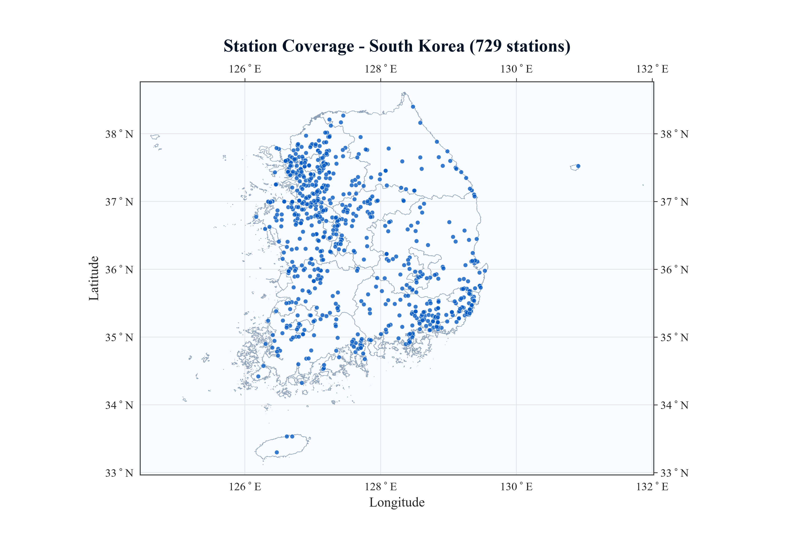
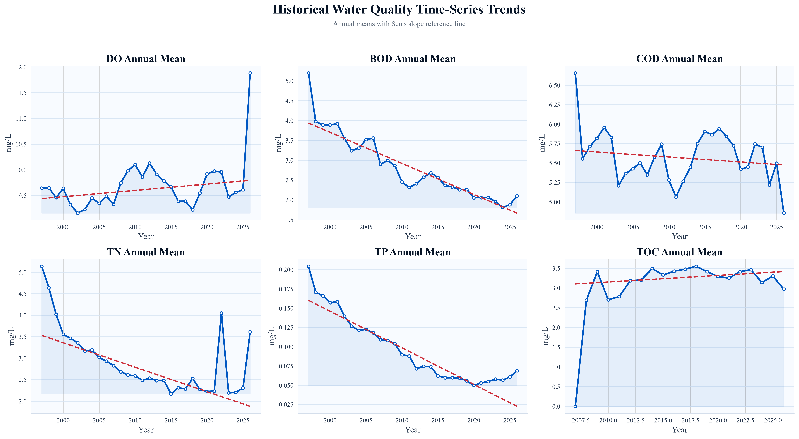
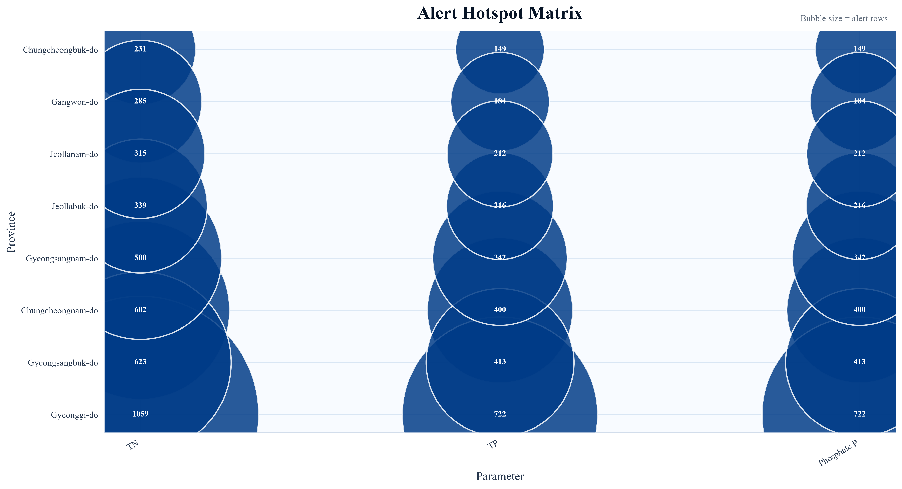
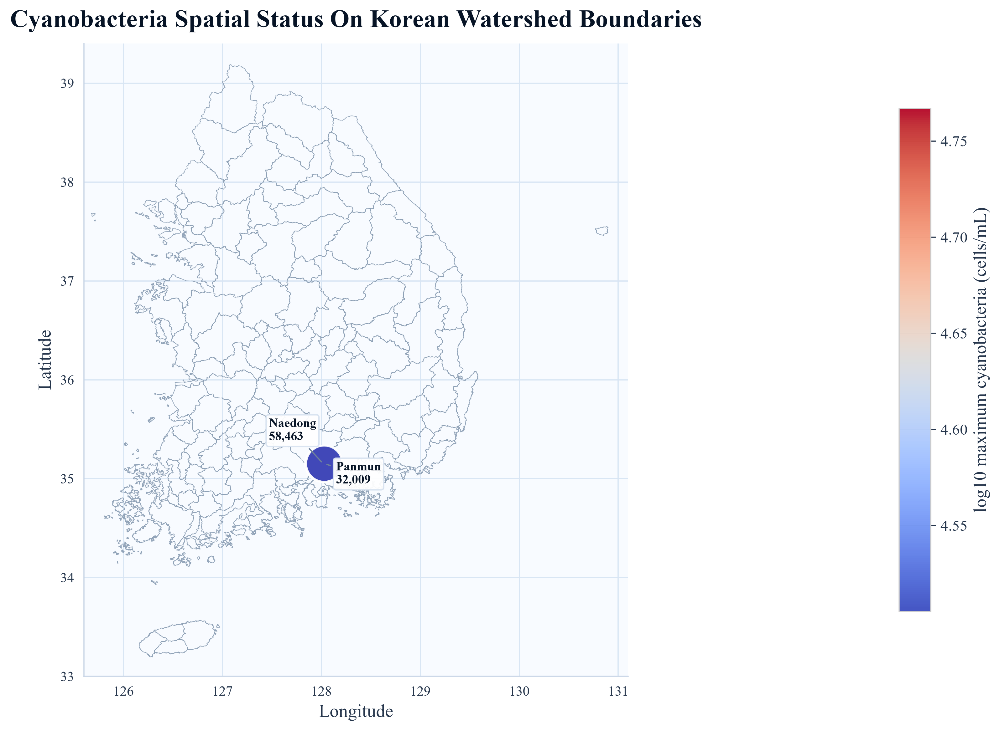
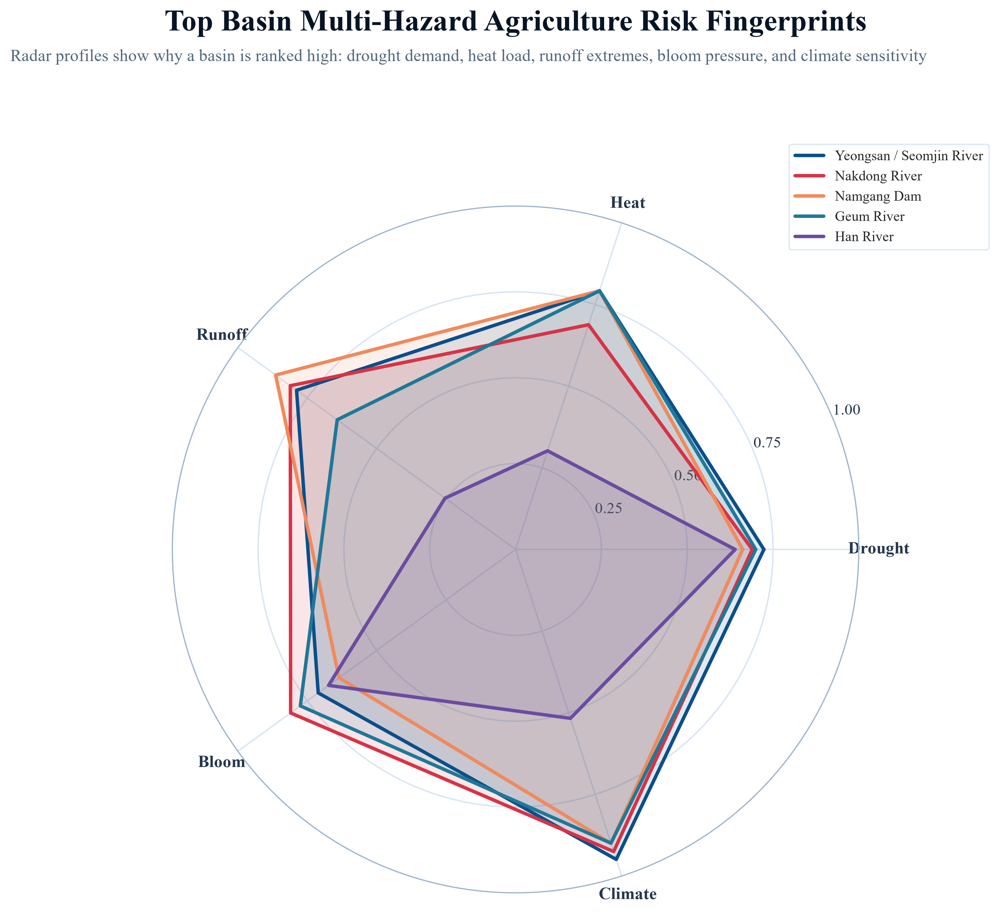
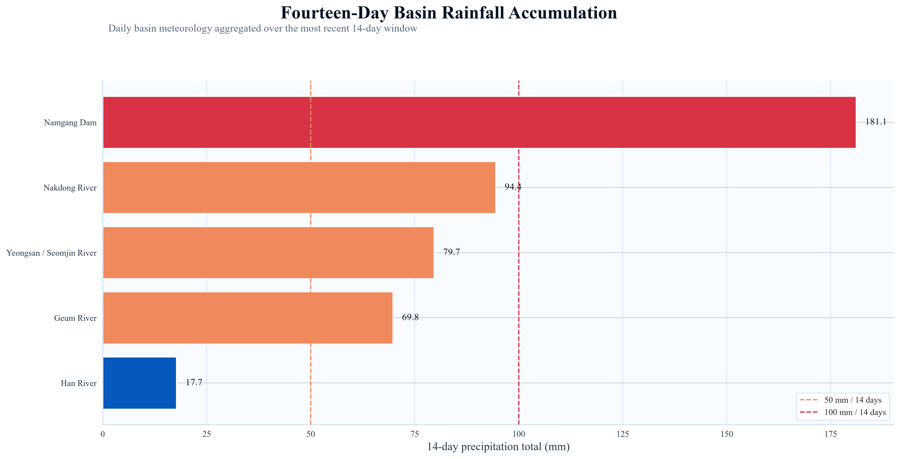

Regional Water Environment System Lab
Water is the foundation of sustainable agriculture and resilient communities. At RWESL, we advance science-driven solutions for water resource conservation, hydrological watershed modeling, and autonomous AI-powered environmental monitoring.
Core Research Pillars
By integrating artificial intelligence, big data analytics, remote sensing, and advanced hydrological modeling, we transform environmental data into actionable insights.
Hydrological & Watershed Modeling
Comprehensive watershed modeling using SWAT, HSPF, and distributed physical models. Addressing flood risks, drought mitigation, and reservoir operation dynamics in the Nakdong River and Namgang Dam basins.
AI & Environmental Data Science
Developing autonomous monitoring agents, machine learning potential evapotranspiration (PET) forecasting, and deep learning groundwater trend prediction models for high-density agricultural regions.
Agricultural Water Quality & Climate
Monitoring agricultural non-point source pollution, harmful cyanobacterial algal blooms, and water curtain greenhouse sustainability under intensifying global climate change scenarios.
Latest Laboratory Graphics & Modeling Systems
High-resolution computational outputs, geospatial GIS layers, multi-year statistical diagnostics, and predictive radar analytics developed by RWESL researchers. Click any graphic to inspect in full 5K resolution.

National Telemetry & Station Network
Spatial distribution and watershed monitoring coverage across South Korea's four primary river basins. Click to enlarge in 3392px.

Multi-Year Trend Analysis & Sen's Slope
Long-term statistical variance, Mann-Kendall trend trajectories, and decadal concentration baselines. Click to enlarge in 5404px.

Water Quality Alert Hotspot Matrix
Autonomous spatial anomaly detection matrix prioritizing high-risk threshold exceedances across Korean basins. Click to enlarge in 4443px.

Algal Bloom Risk Spatial Surface
Biomass concentration surface and bloom probability modeling for early mitigation of harmful cyanobacteria outbreaks.

Agro-Climatic Multi-Hazard Radar
Compound vulnerability assessment evaluating drought severity, heat waves, and agricultural runoff risk under climate scenarios.

Basin Precipitation & Telemetry
Continuous rainfall distribution contours and hydrological runoff telemetry across major river catchments.
Research Leadership
Prof. Sang Min Kim
President, Korean Society of Agricultural Engineers (KSAE)
View Profile & Scholar ↗Dr. Muhammad Waqas
PhD in Environment, Climate Change & Sustainability
View Portfolio & Publications ↗Laboratory & Watershed Field Base
Combining state-of-the-art computational modeling labs at Gyeongsang National University with real-world field telemetry stations and watershed monitoring networks across South Korea.